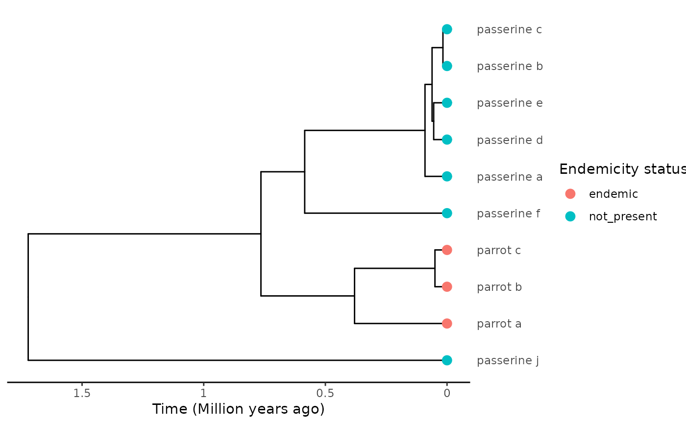
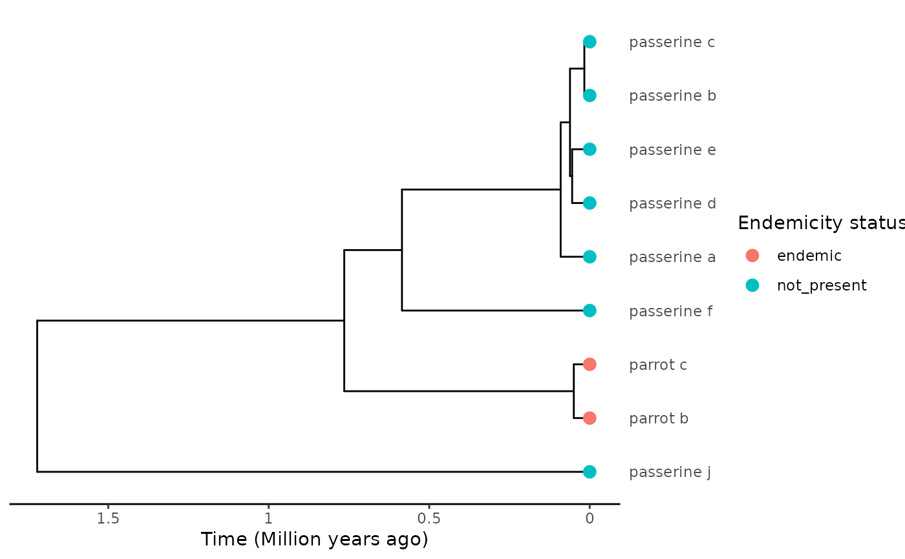
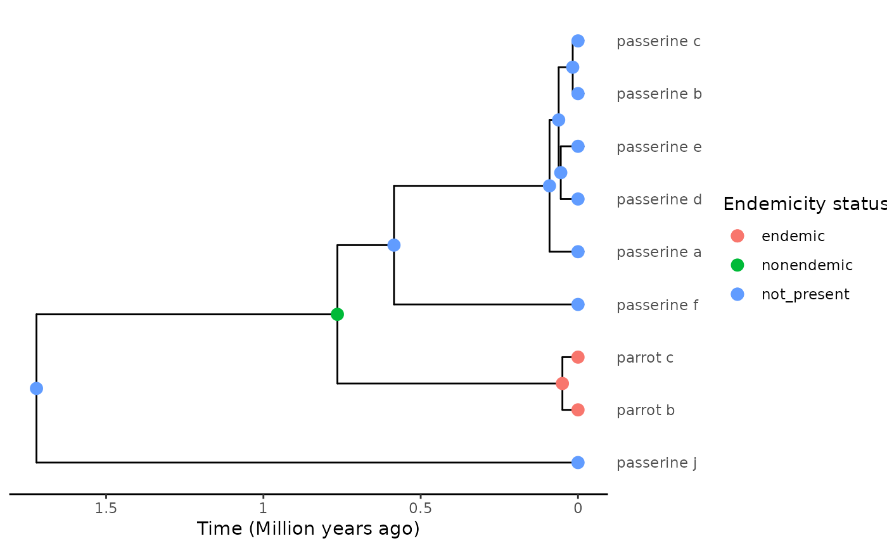

Extracts the stem age from the phylogeny when the a species is known to belong to a genus but is not itself in the phylogeny and there are members of the same genus are in the phylogeny. The stem age can either be for the genus (or several genera) in the tree (stem = "genus") or use an extraction algorithm to find the stem of when the species colonised the island (stem = "island_presence), either 'min' or 'asr' as in extract_island_species(). When stem = "island_presence" the reconstructed node states are used to determine the stem age.
Source: R/extract_stem_age.R
extract_stem_age.RdExtracts the stem age from the phylogeny when the a species is known to
belong to a genus but is not itself in the phylogeny and there are members
of the same genus are in the phylogeny. The stem age can either be for the
genus (or several genera) in the tree (stem = "genus") or use an extraction
algorithm to find the stem of when the species colonised the island
(stem = "island_presence), either 'min' or 'asr' as in
extract_island_species(). When stem = "island_presence"
the reconstructed node states are used
to determine the stem age.
Arguments
- genus_name
Character string of genus name to be matched with a genus name from the tip labels in the phylogeny
- phylod
A
phylo4dobject from the packagephylobasecontaining phylogenetic and endemicity data for each species.- stem
Character string, either "genus" or "island_presence". The former will extract the stem age of the genussbased on the genus name provided, the latter will extract the stem age based on the ancestral presence on the island either based on the "min" or "asr" extraction algorithms.
- extraction_method
A character string specifying whether the colonisation time extracted is the minimum time (
min) (before the present), or the most probable time under ancestral state reconstruction (asr).
Examples
# In this example the parrot clade is the genus of interest only the parrots
# are endemic to the island and all the passerines are not on the island
set.seed(1)
tree <- ape::rcoal(10)
tree$tip.label <- c(
"passerine_a", "passerine_b", "passerine_c", "passerine_d", "passerine_e",
"passerine_f", "parrot_a", "parrot_b", "parrot_c", "passerine_j")
tree <- phylobase::phylo4(tree)
endemicity_status <- c(
"not_present", "not_present", "not_present", "not_present", "not_present",
"not_present", "endemic", "endemic", "endemic", "not_present")
phylod <- phylobase::phylo4d(tree, as.data.frame(endemicity_status))
DAISIEprep::plot_phylod(phylod)

# the species 'parrot_a' is removed and becomes the missing species we want
# to the know the stem age for
phylod <- phylobase::subset(x = phylod, tips.exclude = "parrot_a")
DAISIEprep::plot_phylod(phylod)

extract_stem_age(
genus_name = "parrot",
phylod = phylod,
stem = "island_presence",
extraction_method = "min"
)
#> [1] 0.7648553
# here we use the extraction_method = "asr" which requires ancestral node
# states in the tree.
phylod <- add_asr_node_states(
phylod = phylod,
asr_method = "parsimony",
tie_preference = "mainland"
)
DAISIEprep::plot_phylod(phylod)

extract_stem_age(
genus_name = "parrot",
phylod = phylod,
stem = "island_presence",
extraction_method = "asr"
)
#> [1] 1.721423
# lastly we extract the stem age based on the genus name
extract_stem_age(
genus_name = "parrot",
phylod = phylod,
stem = "genus",
extraction_method = NULL
)
#> [1] 0.7648553